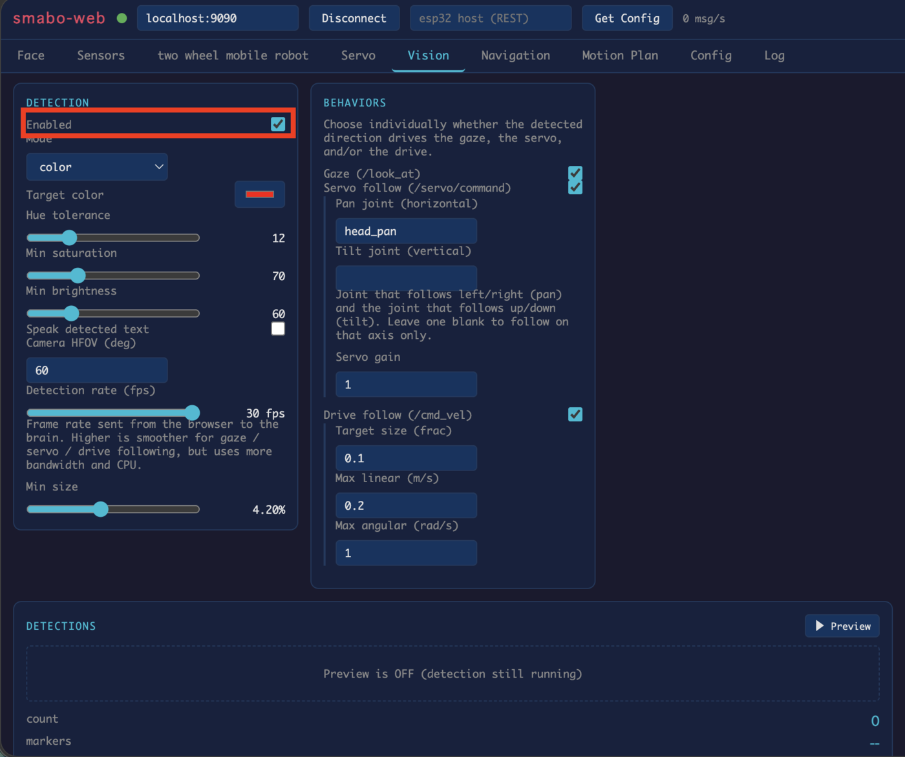
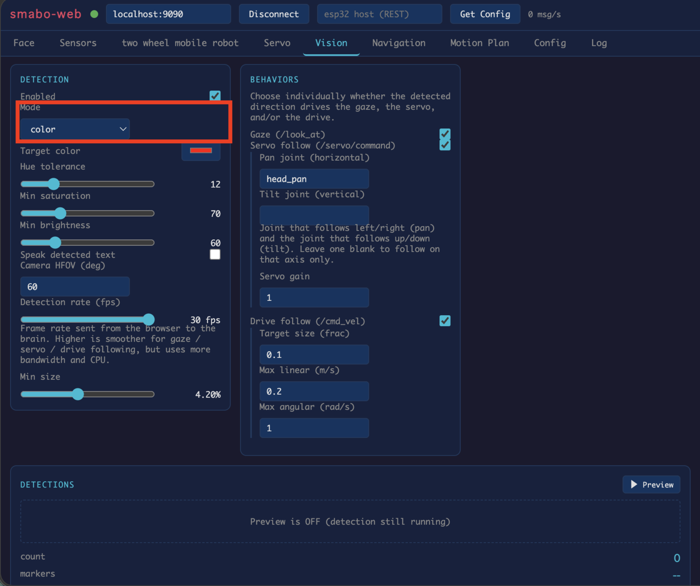
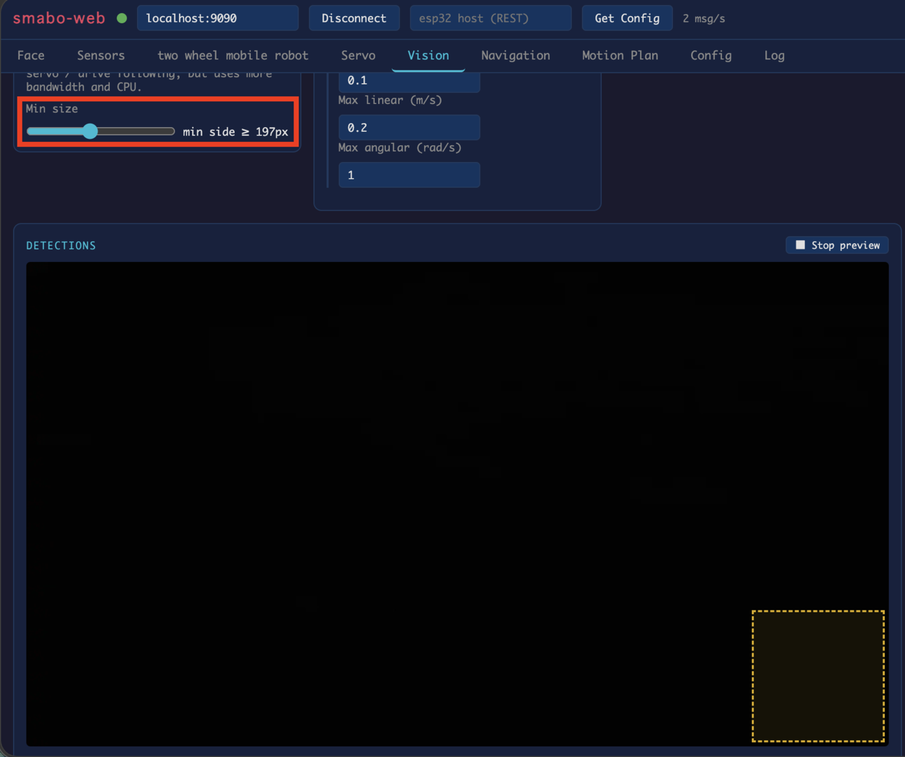
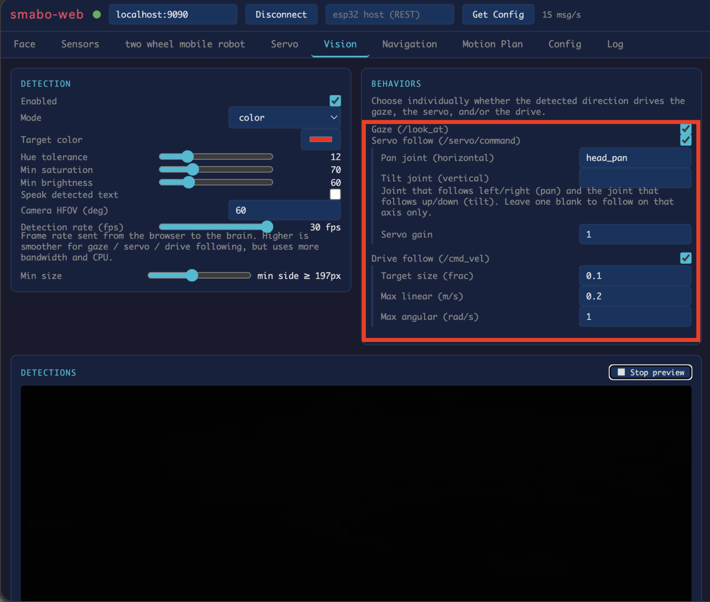
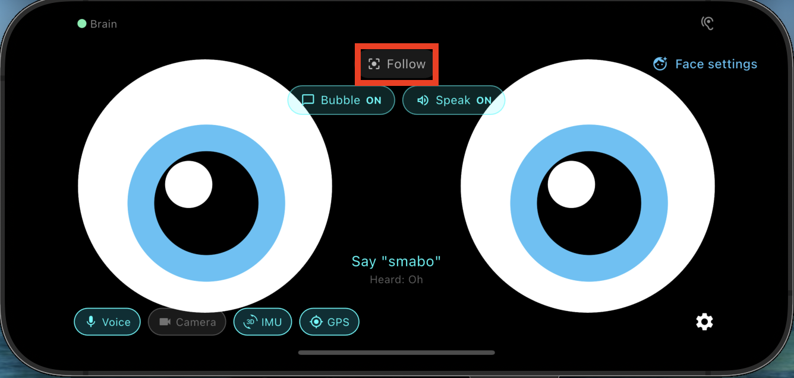

Roadmap#
This page is the guide for the "Image Processing" node on the roadmap below.
This guide assumes you have completed the smabo-brain and smabo-app setup.
Overview#
This page explains the Image Processing feature of smabo.
Specifically, you will:
- Detect objects in the camera feed and visualize results in smabo-web
- Visualize detection results in smabo-web
- Control smabo's eyes based on detection results
Operation#
Startup Procedure#
Follow the startup procedure here.
Detection Modes#
In smabo-web, go to the Vision tab and enable Detection to activate image processing.

Several detection modes are available. Change the Mode to detect different types of objects:
- AR marker
- Color (specified color tracking)
- Face
- QR code

You can also set a Min size to define the minimum object size to detect (objects at least this size will be recognized). Enable the preview to see the minimum size frame in the bottom-right corner.

Behaviors#
Under BEHAVIORS in the Vision tab, you can control smabo based on detection results.
Behaviors act on the largest detected object, using its position and size in the frame.

Available behavior types:
- Eye follow — smabo's eyes track the detected object
- Servo follow — a servo motor tracks the detected object (for neck movement; horizontal and vertical axes configurable — see Head Tilt)
- Differential drive — the robot drives toward or away from the detected object to maintain a target size (see Mobile Robot)
For example, to use Eye follow: set smabo-app's face mode to Follow.

Then hold the target object in front of the camera — smabo's eyes will track it.
Next#
This is a terminal node on the roadmap.
To explore other features, pick another page from the roadmap.